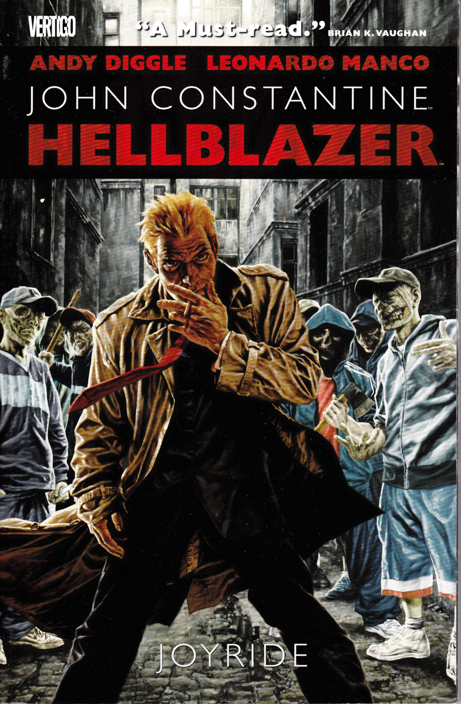

NeuromancerDe:
|
| Mais Informações |
|---|
DescriçãoArrogante e negligente e este é John Constantine, tem vastos conhecimentos sobre ocultismo, demonologia e outros assuntos obscuros. Esse personagem foi criado por Alan Moore, como um mero figurante da revista Monstro do Pântano, mas se popularizou rapidamente. Foi criado por Moore para satisfazer o pedido dos então desenhistas da revista, Stephen Bissette e John Totleben de ter um personagem fisicamente parecido com o cantor Sting nas histórias. Um ano depois de sua primeira aparição , ganhou sua própria revista, Hellblazer. Sua primeira equipe criativa foi composta por Jamie Delano nos roteiros e John Ridgway nos desenhos. Ao longo de sua publicação, Constantine já teve histórias criadas por alguns dos mais célebres autores dos quadrinhos.
Autor: Andy Diggle |